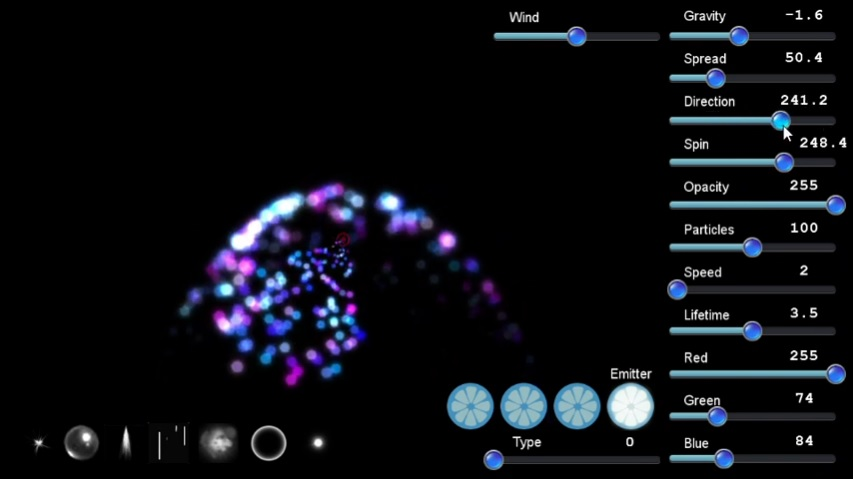
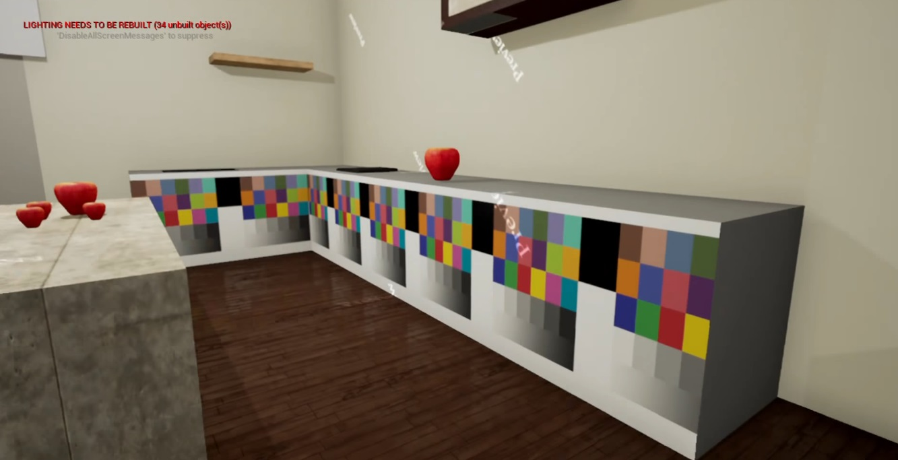
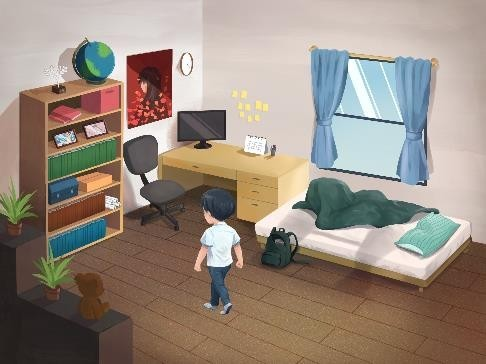
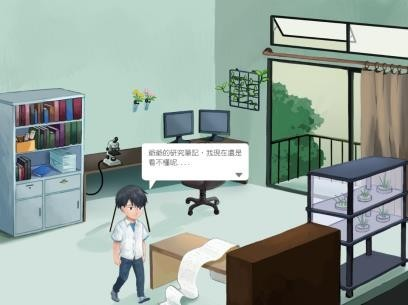

Practice
粒子特效
引擎：Cocos2d-x
練習編寫一個粒子特效的系統。
右方拉桿設定粒子參數、左下角的圖示變換粒子圖片。
點擊畫面可產生粒子，點擊藍色圓形圖示切換發射器，不同模式有不同軌跡運動。
Video URL: https://www.youtube.com/watch?v=uE46F91d5Qc

蒸煮廚
引擎： Unreal Engine 4
課堂上的VR遊戲專案，針對虛擬實際的特點，設計不同媒材下的遊戲互動。
原企劃包含打開櫃子、冰箱等傢俱尋找食材及器具、切菜、翻鍋等可以搭配VIVE手把遊玩的動作。
初次接觸UE4的blueprint介面及HTC的VIVE，一切都很陌生，要在約兩週的時間內學習並製作，成品十分地粗糙。
課程結束後，硬體設備支援不足，也無法繼續製作。
但在此次的專案學習到許多從前沒接觸過的領域，不論是VR遊戲或是Unreal引擎，對這些新的趨勢有了初步的認識。

Flora
引擎：cocos2d-x / Unity
前期以cocos2d-x製作，但在輸出至平板裝置上遇到困難，後期便改用Unity引擎。
以植物為背景故事主題，玩家需觀察四周環境、蒐集道具、解開謎題的2D探索遊戲。
 